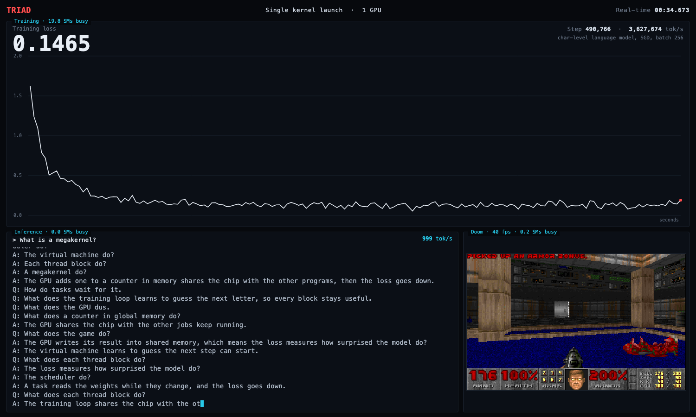
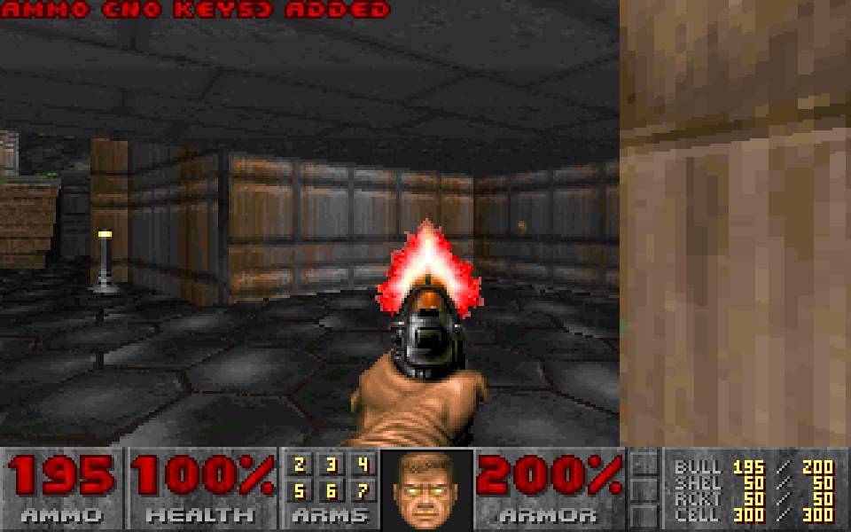

🧠 A language model trains, 💬 the same weights stream out text, and 👹 Doom plays, all at the same time inside a single persistent GPU kernel launch. These are the measurements.
🧩 What runs in the kernel
A tiny virtual machine inside the kernel claims the next ready task, runs it and signals the tasks waiting on it. The demo itself shows only the three programs; this site is where the numbers live.
Training
A character-level language model: forward, backward and SGD run as kernel tasks. The loss falls while you watch.
Inference
Text is generated from the live training weights, so the output visibly improves as the loss drops.
Doom
The real engine (doomgeneric, shareware E1M1) runs its own game loop on the GPU, with its pixel drawing spread over the whole thread block.


🏗️ Architecture
Every block is a long-lived worker. Warp 0 claims the next ready task from sharded ticket queues (Doom, then inference, then training); dependency counters with memory fences release the next phase, so nothing ever returns to the host. Watch the tasks flow:

👹 One Doom frame
Thread 0 runs the game and queues draws; 255 workers execute them behind one barrier. 24 ms becomes 6.7 ms and the picture stays pixel-identical.

📊 Triad vs the same jobs launched normally
Every configuration
Baselines compared to the megakernel
🆚 Against what Flapping Airplanes publish
Their numbers are read frame by frame from the HD demo video. Ours are measured here. Hardware and model differ, so read the ratios, not the absolute values.
🚀 Reproduce
git clone https://github.com/Bobliuuu/flapping-airplanes && cd flapping-airplanes ./doom-gpu/setup_box.sh ubuntu@<ip> # once: clang, engine source, shareware WAD (md5 checked) ./live-demo/run_demo.sh ubuntu@<ip> # the three-program demo, tunnelled to your browser ./benchmarks/run_benchmarks.sh ubuntu@<ip> 5 6 # this page's numbers; then open site/index.html
- Method. Each number is the mean of repetitions of a few seconds each, with the standard deviation shown. Doom measurements run in their own process because the engine cannot be re-created in one.
- Baselines. The "individually timed" rows run one program alone on the GPU, like the video. The "streams" and "processes" rows run both at once.
- Limits. One GPU, one model size, a scripted Doom player, no sound. Loss and text are from a small corpus the model largely memorises.